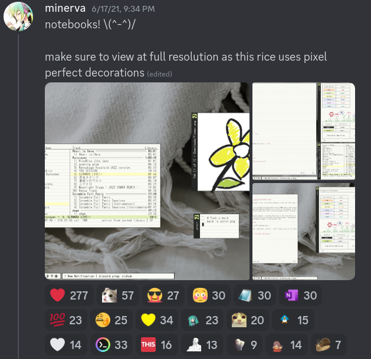
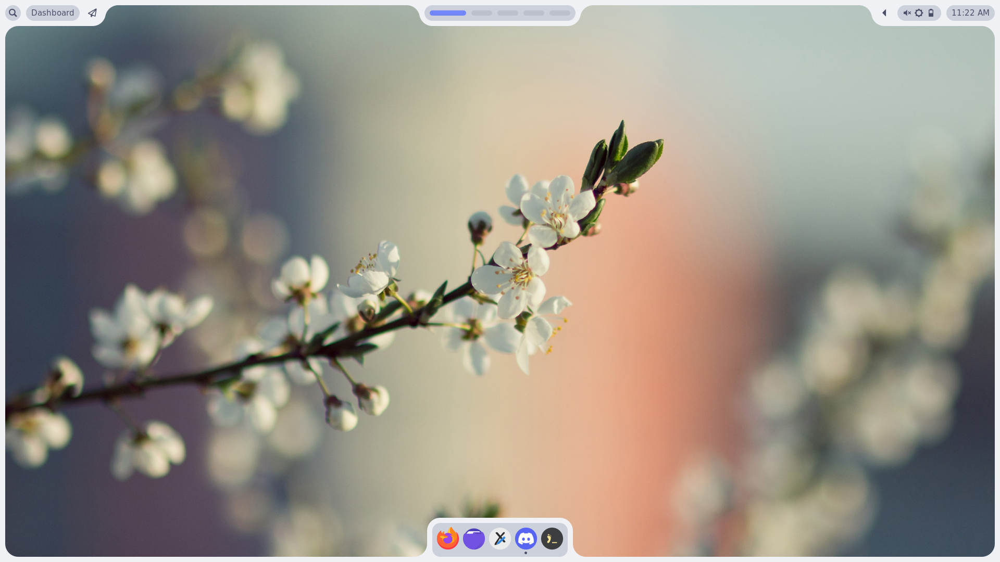
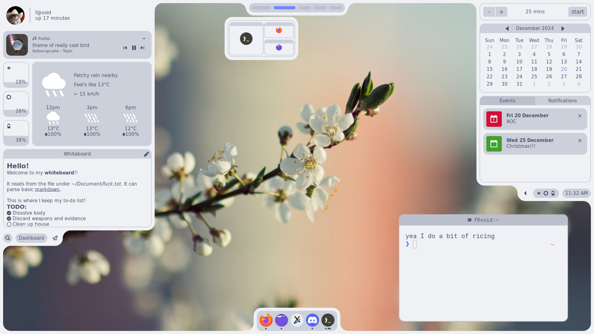
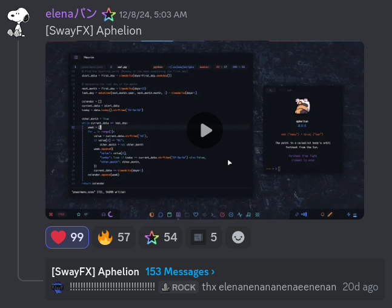
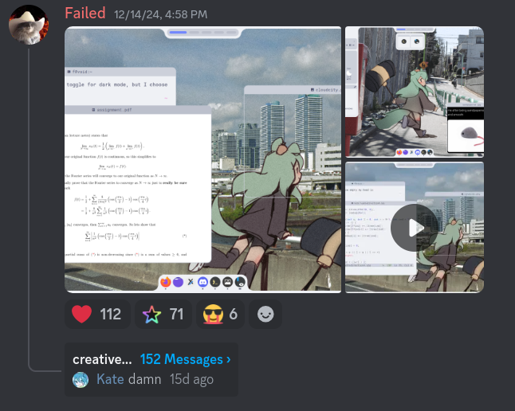
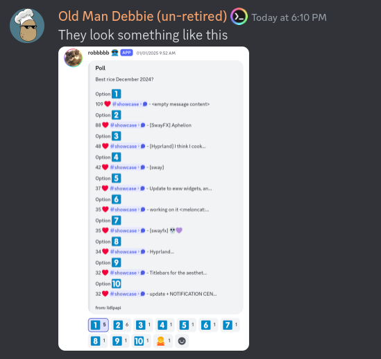
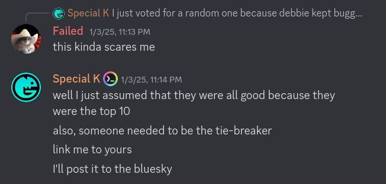
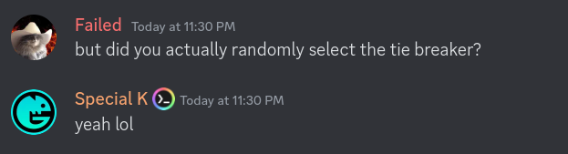

That time I lost to the best ricer of all time
5/1/2025
Monthly top posts
The story starts in October, when a rice was pinned in the showcase channel of the r/unixporn discord server for the first time in 4 years. Turns out, the moderators are trying a new system where the top post of the month gets pinned and set as the server banner for the month. Additionally, the user gets a special "unixpornstar" role to indicate that they are a certified peak ricer.
This may not seem like much (because it really wasn't), but having a pinned post was essentially free advertising for your rice, permanently. This makes it significantly easier to increase the number of hearts on your post (these hearts hold absolutely no real world value whatsoever), which is incredibly valuable (it's not).
As an example of how valuable a pin is in showcase (it's not valuable at all), the top showcase rice of all time has 277 hearts currently, 127 more hearts than the second rice all time, most likely because it's pinned.
Point is, the only possible chance of ever surpassing this 4-year-old rice is if your rice also happens to get pinned, which has never happened to anyone ever except for 2 user. Until now.
How the system works
All posts on the showcase channel has a heart reaction which indicates a "point", like a "like" or "upvote". But getting top post of them month isn't as simple as getting the most points within the month, for good reasons.
- Desktop shitposts can be uploaded, and it is allowed. (So long as the post is unix)
- Non rices like software is also allowed, which doesn't count as a rice.
- User may be able to cheat using many alt accounts or other methods
- The community has shit taste.
Basically, the community cannot exactly be trusted to do something as important as setting the server banner, so the safe option is to have some moderators check with it beforehand. Like a teacher having the last say in a vote.
As of now, the system works as follows:
- At the end of the month, the top 10 posts are chosen
- All the moderators vote for a worthy post
- The post with the most votes is deemed as the prestige "post of the month"
That being said, October is also the month when I finish off my final exams and finally escape the grasp of the academic system, which meant I had lots of free before the start of next semester. I obviously wanted the role and privilege (it's worth absolutely nothing) so for the next months, I started scheming.
Deception, cursed techniques, and whimsy
Over the course of November-December, I made the most technically advanced rice that I have ever created.
 The rice wasn't really catered towards my usual preference. If I wanted a rice that I was happy with, I would have just stuck to CarbonMonoxide. The rice was a weapon, made with the intention to steal the hearts of many and gain the prestige post of the month.
I named it "MereWhimsy" and aimed to keep the rice simple and more or less comprehendable, but don't be fooled. To pull this rice off, I had to use complex techniques that had never been used by anyone ever before (which I will leave as a future blog topic). And pull off some crazy deception techniques.
Well, it doesn't really matter how much blood, sweat and cum goes into a rice. What matters is how it looks, and I was pretty happy with the result after some private nitpicks from other ricers. Before I posted my rice, I went to bed after taking the screenshots and recordings the night before, which was a habit I developed to prevent myself from acting impulsively.
The miraculous return of Elenapan
Elenapan aka u/EmpressNoodle is often regarded as one of (if not) the best ricer of all time. Unironically, the fastest way to find her works is to open the r/unixporn subreddit and sort by top of all time, which says a lot about her impact on the community.
It's safe to say that the entire community knows Elena, or has at least seen her rice at one point or another. And thus, it's fairly safe to say that the return of Elena surprised the community, especially since she disappeared from the community for 4 years after her last rice.
I woke up to find out about Elena's new rice Aphelion, conveniently posted on the same day I was planning to post my rice. A few minutes analysis led me to conclude that her rice was definitely more complete than mine, and if I wanted to go for post of the month, I had to do much more polishing before my rice could even stand a chance against it. Undeniably, this is one of the best rices I had ever seen.
That said, I refrained from posting my rice and spend more time polishing and adding more features to it. I thought about posting my rice next month, but there were many who already believed that this would be the post of the month, and I wanted the opportunity to prove them wrong.
I regained the confidence to post my rice after 6 days of ricing, after convincing myself that my rice will at least make it to the top 10 post.
Which is when I gained over 100 hearts, surpassing Elena at that time who had 88 hearts. Not only did this guarantee my position in this month's poll, it also made it to the top 2 post of this year. Far beyond my expectations.
With this, I was basically done. There was nothing I could do now except wait for the results in January.
January 3rd
I woke up to find a screenshot of Elena's rice as the server banner, meaning I had officially lost against Elena. Turns out, I lost by 1 vote.
I can't say I was surprised, since Elena's rice is without a doubt, a very good rice. My competitive ass concluded that if I wanted to reach post of the month, I should move on from MereWhimsy and create a new rice that was simply better (somehow).
Following this, I found out that one of the mods had randomly chosen their vote.
But it gets worse. It was revealed that the mod had randomly chosen the vote during a tiebreak situation.
This took a bit of processing, because I initially thought that the mod was making a joke. I needed to be sure.
Holy shit. I actually spent one month developing a rice that lost by random chance.
If you were to tell me that my rice simply wasn't good enough to win over the moderators, I would have sulked for a while, accepted it, before going back to the drawing board and spending the next few months (in my revenge arc) scheming to create a rice so good that even bias cannot get in the way.
Unfortunately, that wasn't the case. My rice lost because I was unlucky.
My motivation to create a better rice started fading away as I realized that the reason I lost might not be attributed to the fact that my rice wasn't good enough. And if that's the case, then is there any real reason to spend another month trying to best a rice that was already successful? Even if I did put in the work and create a better rice, what if it ends up randomly losing like this one? If the mod vote is more of a gamble, is it worth putting a month of effort into?
Maybe it's best if I take a break from ricing for now.
For the mods (if they ever read this)
TLDR: I spent one month planning and developing a rice for post of the month, just to lose because one of the mods voted randomly during the tiebreaker. (More info above)
And I don't blame him, I'm sure he (and all of you) are functioning adults with a life and job, so most of you don't care for something as trivial as reactions on a discord message. But I ask that for the sake of the community (and my sanity), that you spend the bare minimum effort to look and judge all the rices (preferably with minimal bias), or at least delegate the task to someone who would.
If I ever try for post of the month again, I would prefer not losing to RNG again.
Thanks mods.
-Failed